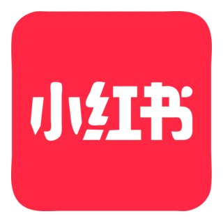
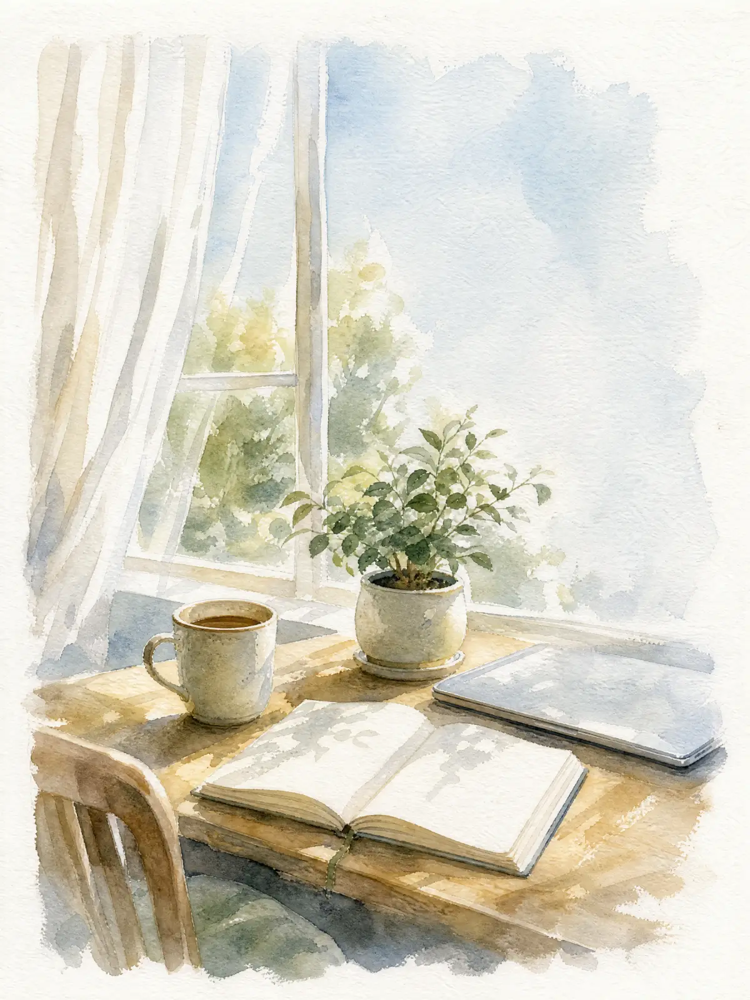
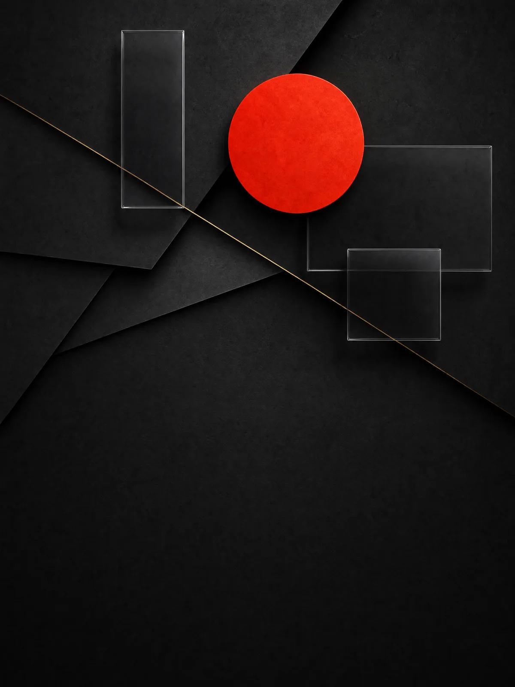
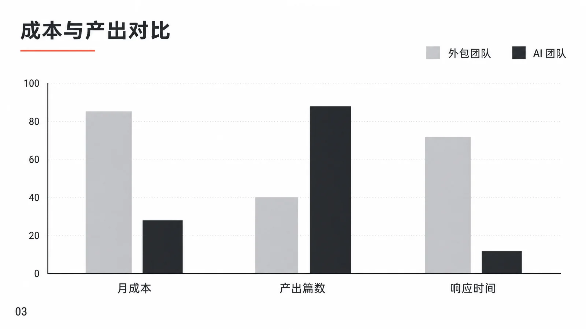
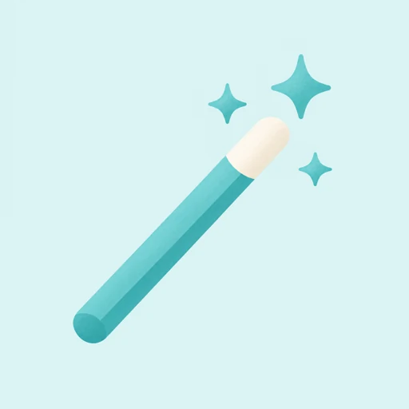
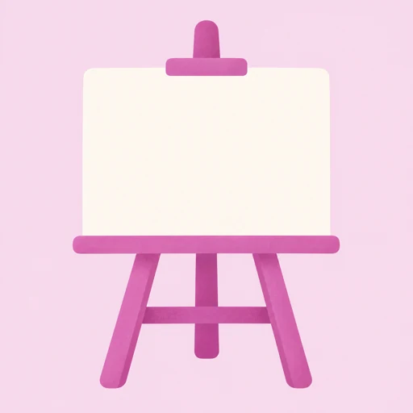
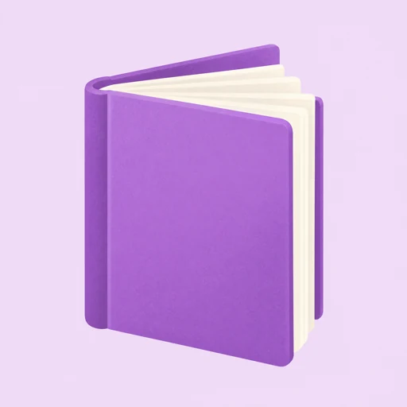

MakerOS
用 AI 加速你的事业
MakerOS
创业者与企业团队的 AI 工作台
01
多模型对话
九家主流模型，一个对话里随时切换
ChatGPT · Claude · GeminiDeepSeek · Kimi · Qwen联网搜索
今天想做点什么？
说说你的想法，或 @ 一位智能体…
 Claude
Claude
 Gemini
Gemini
联网
ChatGPT OpenAI
Claude AnthropicGemini Google DeepSeek 深度求索
DeepSeek 深度求索 Grok xAI
Grok xAIKimi 月之暗面
Qwen 阿里云
 豆包 字节跳动
豆包 字节跳动 GLM 智谱
GLM 智谱02
智能体
输入 @，把任务交给擅长的助手
品牌内容营销文案私域运营翻译

小红书笔记助手说说你的想法，或 @ 一位智能体…Claude智能体
长文写作助手
对话式引导，写出结构完整的深度长文
小红书笔记助手
给主题，出标题、正文与话题标签
提示词设计专家
把模糊需求写成结构化的提示词
产品发售信
按痛点、承诺、证据、限时四段成稿
小红书笔记助手 正在写作
03
创作编辑器
左边对话，右边直接成稿
划词改写排版主题同步公众号
写一篇公众号开头：小团队怎么用 AI 省时间
好的，开头三段已写进右侧正文。
版本 2
已写入正文
排版配图同步公众号
04
AI 生图工作台
一句描述，直出 4K 高清图
海报配图封面图片式 PPT
你来想象，AI 来作画
描述你想要的画面…
水彩
3:4
GPT Image · 4K



05
专家工作台
按行业备好整套工具
教培：备课 · 批改 · 招生自媒体：选题 · 写作 · 配图
教培行业自媒体内容专家
学生、批改、备课、家校沟通、招生内容
作文批改评分报告
讲义生成大纲 + 正文
学生成长树成长时间线
成长对比图招生海报
课堂反馈家长反馈卡
学生管理学生档案
全部 AI 工作，一个入口
多模型对话

智能体创作编辑器

AI 生图专家工作台

胶囊小课MakerOS
创业者与企业团队的 AI 工作台
makeros.cn
注册即送 1,000 积分 · 国内直接使用